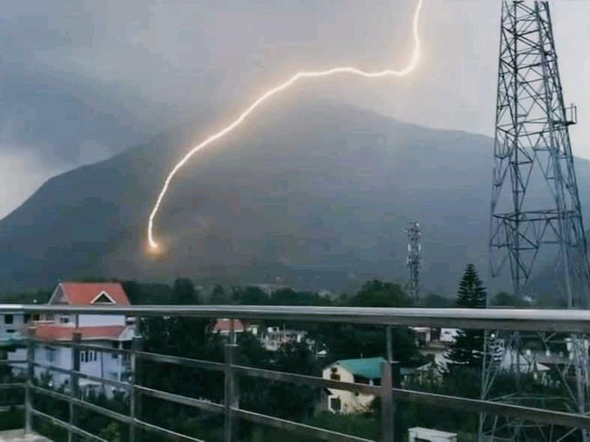
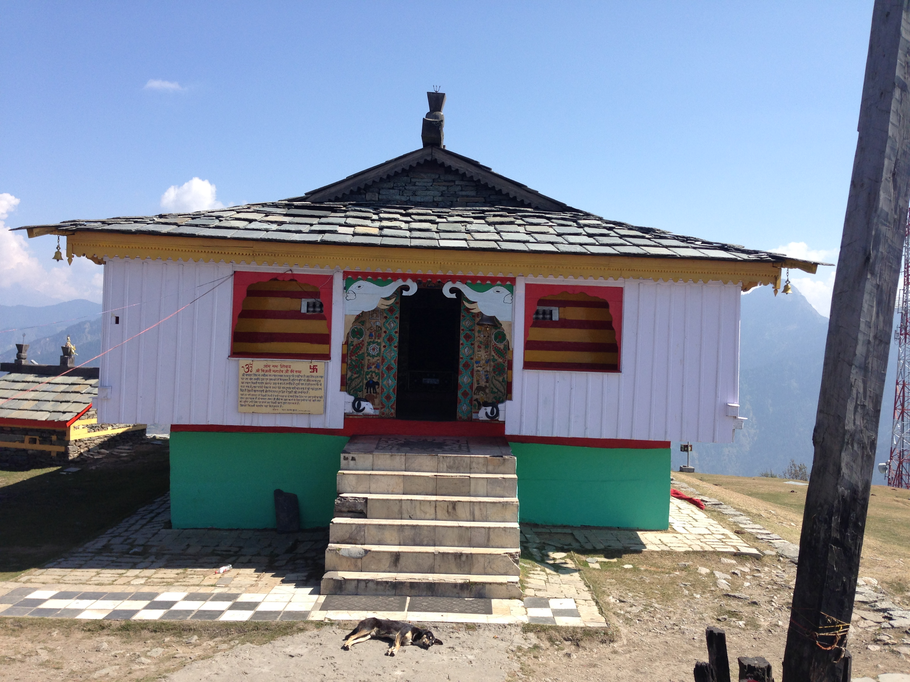
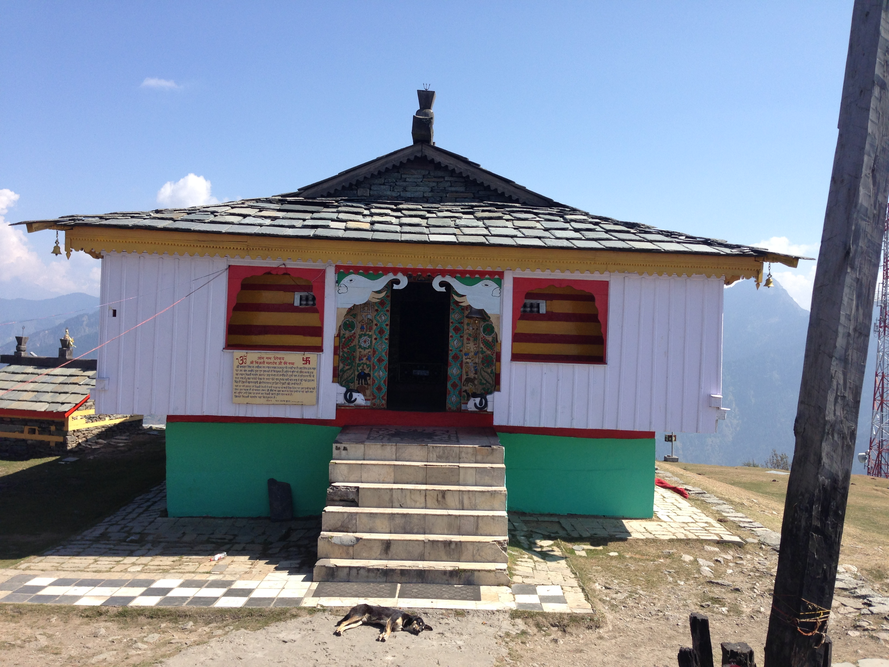

Bijli MahaDev
कुल्लू घाटी का रहस्य
पूरी कुल्लू घाटी में ऐसी मान्यता है कि यह घाटी एक विशालकाय सांप का रूप है। इस सांप का वध भगवान शिव ने किया था। जिस स्थान पर मंदिर है वहां शिवलिंग पर हर बारह साल में भयंकर आकाशीय बिजली गिरती है। बिजली गिरने से मंदिर का शिवलिंग खंडित हो जाता है। यहां के पुजारी खंडित शिवलिंग के टुकड़े एकत्रित कर मक्खन के साथ इसे जोड़ देते हैं। कुछ ही माह बाद शिवलिंग एक ठोस रूप में परिवर्तित हो जाते हैं। इस शिवलिंग पर हर बारह साल में बिजली क्यों गिरती है और इस जगह का नाम कुल्लू कैसे पड़ा इसके पीछे एक पौराणिक कथा है जो इस प्रकार है।
कुलान्त दैत्य
कुल्लू घाटी के लोग बताते हैं कि बहुत पहले यहां कुलान्त नामक दैत्य रहता था। दैत्य कुल्लू के पास की नागणधार से अजगर का रूप धारण कर मंडी की घोग्घरधार से होता हुआ लाहौल स्पीति से मथाण गांव आ गया। दैत्य रूपी अजगर कुण्डली मार कर ब्यास नदी के प्रवाह को रोक कर इस जगह को पानी में डुबोना चाहता था। इसके पीछे उसका उद्देश्य यह था कि यहां रहने वाले सभी जीवजंतु पानी में डूब कर मर जाएंगे। भगवान शिव कुलान्त के इस विचार से से चिंतित हो गए।
क्या कहा भगवान शिव ने ?
बड़े जतन के बाद भगवान शिव ने उस राक्षस रूपी अजगर को अपने विश्वास में लिया। शिव ने उसके कान में कहा कि तुम्हारी पूंछ में आग लग गई है। इतना सुनते ही जैसे ही कुलान्त पीछे मुड़ा तभी शिव ने कुलान्त के सिर पर त्रिशूल वार कर दिया। त्रिशूल के प्रहार से कुलान्त मारा गया। कुलान्त के मरते ही उसका शरीर एक विशाल पर्वत में बदल गया। उसका शरीर धरती के जितने हिस्से में फैला हुआ था वह पूरा की पूरा क्षेत्र पर्वत में बदल गया। कुल्लू घाटी का बिजली महादेव से रोहतांग दर्रा और उधर मंडी के घोग्घरधार तक की घाटी कुलान्त के शरीर से निर्मित मानी जाती है। कुलान्त से ही कुलूत और इसके बाद कुल्लू नाम के पीछे यही किवदंती कही जाती है।
हर बारहवें साल में ही आकाशीय बिजली किउ ?

कुलान्त दैत्य के मारने के बाद शिव ने इंद्र से कहा कि वे बारह साल में एक बार इस जगह पर बिजली गिराया करें। हर बारहवें साल में यहां आकाशीय बिजली गिरती है। इस बिजली से शिवलिंग चकनाचूर हो जाता है। शिवलिंग के टुकड़े इकट्ठा करके शिवजी का पुजारी मक्खन से जोड़कर स्थापित कर लेता है। कुछ समय बाद पिंडी अपने पुराने स्वरूप में आ जाती है।
आकाशीय बिजली बिजली शिवलिंग पर गिरने के बारे में कहा जाता है कि भगवान शिव नहीं चाहते चाहते थे कि जब बिजली गिरे तो जन धन को इससे नुकसान पहुंचे। भोलेनाथ लोगों को बचाने के लिए इस बिजली को अपने ऊपर गिरवाते हैं। इसी वजह से भगवान शिव को यहां बिजली महादेव कहा जाता है। भादों के महीने में यहां मेला-सा लगा रहता है। कुल्लू शहर से बिजली महादेव की पहाड़ी लगभग सात किलोमीटर है। शिवरात्रि पर भी यहां भक्तों की भीड़ उमड़ती है।
यह जगह समुद्र स्तर 2450 मीटर की ऊंचाई पर स्थित है। शीत काल में यहां भारी बर्फबारी होती है। कुल्लू में भी महादेव प्रिय देवता हैं। कहीं वे सयाली महादेव हैं तो कहीं ब्राणी महादेव। कहीं वे जुवाणी महादेव हैं तो कहीं बिजली महादेव। बिजली महादेव का अपना ही महात्म्य व इतिहास है। ऐसा लगता है कि बिजली महादेव के इर्द-गिर्द समूचा कुल्लू का इतिहास घूमता है। हर मौसम में दूर-दूर से लोग बिजली महादेव के दर्शन करने आते हैं।
 
